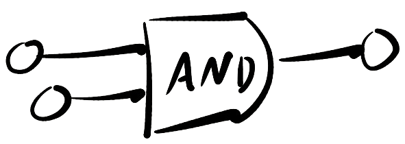
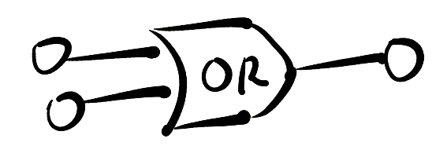
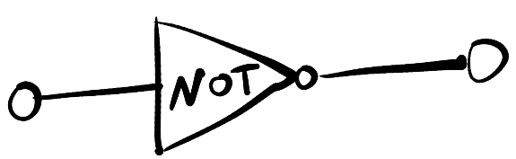
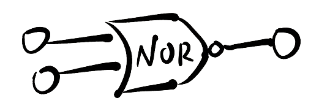
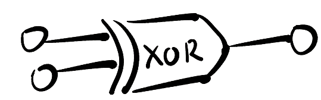

Importance of Computational Logic in Computer Science
The importance of computational logic in the field of computer science cannot be overstated. It serves as the bedrock upon which all aspects of computing are built and is integral to the functionality and advancement of modern technology. Computational logic, at its core, involves the systematic application of mathematical and logical principles to problem-solving and decision-making processes.
It provides the foundational framework for algorithm design, enabling the creation of step-by-step procedures to solve complex problems. These algorithms power every facet of computing, from search engines to artificial intelligence.
Computational logic extends beyond algorithms to digital circuit design. Logic gates, the fundamental building blocks of digital circuits, operate based on computational logic. Understanding these gates is essential for optimizing and developing hardware, ensuring the efficient operation of computers and electronic devices.
In software development, computational logic plays a pivotal role in programming. It dictates the logical flow of code, allowing developers to create applications and systems that perform a vast array of tasks, from basic calculations to intricate data analysis. The importance of computational logic further extends into areas like artificial intelligence, machine learning, data analysis, and computer security. It underpins the development of secure and efficient systems while also providing the logical foundation for advanced technologies that are transforming industries.
In conclusion, computational logic is the intellectual cornerstone of computer science. Its principles drive innovation, shape the future of technology, and empower computer scientists and engineers to create groundbreaking solutions to complex problems.
Logic Gates: The Building Blocks of Digital Logic
Logic gates are the fundamental building blocks of digital logic circuits, serving as the backbone of modern digital technology. These essential components are responsible for processing and manipulating binary data, consisting of ones and zeros, in a way that enables computers and electronic devices to perform intricate tasks with precision and speed.
Logic gates are electronic devices designed to implement basic logic functions. There are several types of logic gates, including AND, OR, NOT, XOR, and more, each with its specific behavior and purpose. These gates take binary input signals and produce binary output signals based on well-defined logical operations.
The AND Gate 
The AND gate is one of the fundamental logic gates in digital electronics. It plays a vital role in processing and manipulating binary data.
The AND gate is a simple electronic device that performs a specific logical operation, and its behavior can be described as follows:
Binary Inputs: The AND gate has two binary inputs, typically labeled as 'A' and 'B'. Each input can take one of two possible values, '0' (logic low) or '1' (logic high).
Logical Operation: The AND gate performs a logical AND operation on its inputs. The output of the AND gate is '1' (logic high) if and only if both of its inputs, 'A' and 'B', are '1'. If any one of the inputs is '0', the output is '0'.
Truth Table: AND Gate
| A | B | C (Output) |
|---|---|---|
| 1 | 1 | 1 |
| 1 | 0 | 0 |
| 0 | 1 | 0 |
| 0 | 0 | 0 |
The AND gate is employed in scenarios where a certain action should occur only if specific conditions are met simultaneously. In computer processors, the AND gate is utilized in bitwise logical operations, such as bitwise AND, which plays a vital role in data manipulation.
The OR Gate 
The OR gate is another fundamental logic gate in digital electronics, integral to the processing of binary data. It performs a logical OR operation on its inputs and is characterized by the following features:
Binary Inputs: The OR gate, like other logic gates, has two binary inputs, typically labeled 'A' and 'B'. These inputs can take on the values '0' (logic low) or '1' (logic high).
Logical Operation: The OR gate performs a logical OR operation on its inputs. The output of the OR gate is '1' if at least one of its inputs is '1'. In other words, for the OR gate, "one or more" inputs being '1' will result in a '1' output.
Truth Table: OR Gate
| A | B | C (Output) |
|---|---|---|
| 1 | 1 | 1 |
| 1 | 0 | 1 |
| 0 | 1 | 1 |
| 0 | 0 | 0 |
The OR gate is known for its applications in creating logical conditions where an action should be taken if one or more conditions are met. It is frequently used in control systems, data filtering, and event triggering.
The NOT Gate 
The NOT gate, also known as an inverter, is one of the simplest yet fundamental logic gates in digital electronics. It performs a logical NOT operation, inverting its input signal. Here are the key characteristics and features of the NOT gate:
Binary Input: The NOT gate has one binary input, typically labeled 'A.' This input can be in one of two states: '0' (logic low) or '1' (logic high).
Logical Operation: The NOT gate performs a logical NOT operation on its input. The output of the NOT gate is the opposite of its input. If the input is '0,' the output is '1,' and if the input is '1,' the output is '0.'
Truth Table: NOT Gate
| A | C (Output) |
|---|---|
| 1 | 0 |
| 0 | 1 |
The NOT gate is essential for reversing the logic level of a signal, which has numerous applications, such as inverting control signals, creating complemented variables, and ensuring that only one input is active in certain logic circuits.
The NAND Gate
The NAND gate is the AND gate connected with the NOT gate, it is the inversion of the AND gate. Here are the key characteristics and features of the NAND gate:
Binary Inputs: Like other logic gates, the NAND gate has two binary inputs, usually labeled 'A' and 'B'. These inputs can assume two states: '0' (logic low) or '1' (logic high).
Logical Operation: The NAND gate performs a logical NAND (NOT AND) operation on its inputs. The output of the NAND gate is '0' (logic low) only when both of its inputs, 'A' and 'B', are '1'. If any one of the inputs is '0', the output is '1'. In essence, it is the opposite of the AND gate.
Truth Table: NAND Gate
| A | B | C (Output) |
|---|---|---|
| 1 | 1 | 0 |
| 1 | 0 | 1 |
| 0 | 1 | 1 |
| 0 | 0 | 1 |
The NAND gate is often employed to create complex logical operations, invert signals, and implement logical functions where certain conditions must not be met.
The NOR Gate 
The NOR gate is the OR gate connnected with the NOT gate, it is the inversion of the OR gate. Here are the key characteristics and features of the NOR gate:
Binary Inputs: Similar to other logic gates, the NOR gate has two binary inputs, usually labeled 'A' and 'B'. These inputs can be in one of two states: '0' (logic low) or '1' (logic high).
Logical Operation: The NOR gate performs a logical NOR operation on its inputs. The output of the NOR gate is '1' (logic high) only when both of its inputs, 'A' and 'B', are '0'. If either input is '1', the output is '0'. In essence, it is the opposite of the OR gate.
Truth Table: NOR Gate
| A | B | C (Output) |
|---|---|---|
| 1 | 1 | 0 |
| 1 | 0 | 0 |
| 0 | 1 | 0 |
| 0 | 0 | 1 |
The NOR gate is often employed in situations where an action is taken if none of the conditions are met or if all conditions are false. NOR gates can be combined with other logic gates to create more complex logical operations.
The XOR Gate 
The XOR gate, or Exclusive OR gate, is a pivotal logic gate in digital electronics, known for its unique operation. It shares the following key features and characteristics:
Binary Inputs: Like other logic gates, the XOR gate has two binary inputs, generally labeled 'A' and 'B.' These inputs can be in one of two states: '0' (representing logic low) or '1' (representing logic high).
Logical Operation: The XOR gate performs a logical XOR (Exclusive OR) operation on its inputs. Its output is '1' (logic high) if and only if one of its inputs, 'A' or 'B,' is '1,' but not both. If both inputs are '0' or '1,' the output is '0'.
Truth Table: XOR Gate
| A | B | C (Output) |
|---|---|---|
| 1 | 1 | 0 |
| 1 | 0 | 1 |
| 0 | 1 | 1 |
| 0 | 0 | 0 |
The XOR gate is frequently used in scenarios where it is necessary to distinguish between two different states or when one condition should be satisfied exclusively, not simultaneously.
The XNOR Gate
The XNOR gate, also known as the Exclusive NOR gate, is a significant logic gate in digital electronics, known for its distinctive operation. Here are its key features and characteristics:
Binary Inputs: The XNOR gate typically has two binary inputs, labeled 'A' and 'B.' These inputs can be in one of two states: '0' (representing logic low) or '1' (representing logic high).
Logical Operation: The XNOR gate performs a logical XNOR (Exclusive NOR) operation on its inputs. Its output is '1' (logic high) if both of its inputs, 'A' and 'B,' are the same (both '0' or both '1'). If the inputs are different (one '0' and one '1'), the output is '0.'
Truth Table: XNOR Gate
| A | B | C (Output) |
|---|---|---|
| 1 | 1 | 1 |
| 1 | 0 | 0 |
| 0 | 1 | 0 |
| 0 | 0 | 1 |
The XNOR gate is a crucial component in digital logic design, known for its applications in creating logical conditions where an action should be taken if two conditions are either both true or both false. It is frequently used in control systems, data comparisons, and error-checking circuits.